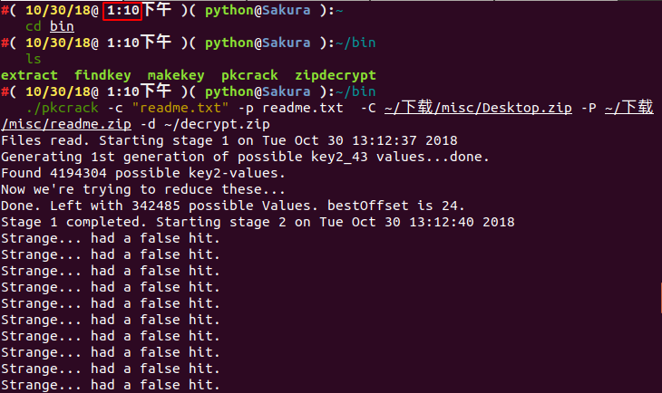
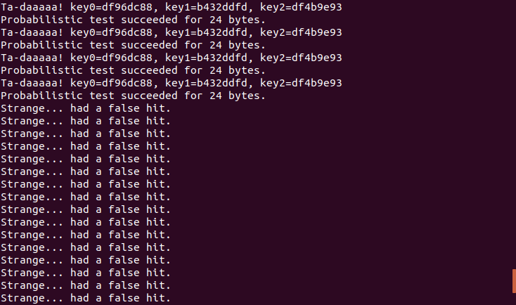

ZIP Format
File Structure¶
The ZIP file is mainly composed of three parts, respectively
| local file header + file data + data descriptor | central directory | end of central directory record |
|---|---|---|
Each compressed source file or directory in the compressed source file data area is a record:
local file header: file header is used to identify the beginning of the file. The file header identifier starts with a fixed value of50 4B 03 04file data: file data records the data of the corresponding compressed filedata descriptor: data descriptor is used to identify the end of the file compression. This structure appears only when the 3rd bit of the generic tag field in the correspondinglocal file headeris set to1immediately after the compressed file source dataCentral directorycentral directory is used to record directory information. Each record in this data area corresponds to one data area in the compressed source file
| Offset | Bytes | Description |
|---|---|---|
| 0 | 4 | Central directory file header signature = 0x02014b50 |
| 4 | 2 | Version made by |
| 6 | 2 | Version needed to extract (minimum) |
| 8 | 2 | General purpose bit flag |
| 10 | 2 | Compression method |
| 12 | 2 | File last modification time |
| 14 | 2 | File last modification date |
| 16 | 4 | CRC-32 |
| 20 | 4 | Compressed size |
| 24 | 4 | Uncompressed size |
| 28 | 2 | File name length (n) |
| 30 | 2 | Extra field length (m) |
| 32 | 2 | File comment length (k) |
| 34 | 2 | Disk number where file starts |
| 36 | 2 | Internal file attributes |
| 38 | 4 | External file attributes |
| 42 | 4 | relative offset of local header |
| 46 | n | File name |
| 46+n | m | Extra field |
| 46+n+m | k | File comment |
End of central directory record(EOCD)end of directory identifier, exists at the end of the entire archive package and is used to mark the end of compressed catalog data. Each compressed file must have one and only one EOCD record
See Official Documentation for more details.
Attack Methods¶
Brute Force¶
Here are two tools for brute-forcing zip.
-
Windows (Paid) - ARCHPR

-
Linux (Free) - fcrackzip
Example command:
root@kali: fcrackzip -b -c1 -u test.zip-b for brute force mode, -c1 specifies password character set to be numbers, -u validates the password with
unzip, -l 5-6 specifies password length
CRC32¶
Basics¶
CRC stands for cyclic redundancy check, and CRC32 means that a check value of 32 bit is generated. Since every bit of a CRC32 value is used in the calculation, when one-bit changes in the data block, a different CRC32 value will be generated.
The CRC32 checksum appears in many files such as a png file, as well as the CRC32 checksum in zip. It is worth noting that CRC32 in zip is the checksum value of the unencrypted files.
This has led to an attack method based on CRC32.
- There is very little content in the file (it is about
4bytes, in most CTFs) - Encrypted password is very long
Instead of brute-forcing the password of zip file , we can brute force the contents of the plaintext file (usually strings) to obtain what we want.
For example, we created a new flag.txt with the content 123 and encrypt it with the password !QAZXSW@#EDCVFR$.

Then, we calculated the CRC32 value of the file within the encrypted zip and found that it matches the CRC32 value in the above figure.
File: flag.txt
Size: 3
Time: Tue, 29 Aug 2017 10:38:10 +0800
MD5: 202cb962ac59075b964b07152d234b70
SHA1: 40bd001563085fc35165329ea1ff5c5ecbdbbeef
CRC32: 884863D2
Note
When brute forcing, we could try to get all possible strings' CRC32 value and compare it with the CRC32 value of file within the compressed zip file.
Here is a CRC32 brute force script:
Note
Run this script in Python2
import binascii
import base64
import string
import itertools
import struct
alph = 'abcdefghijklmnopqrstuvwxyzABCDEFGHIJKLMNOPQRSTUVWXYZ0123456789+/='
crcdict = {}
print "computing all possible CRCs..."
for x in itertools.product(list(alph), repeat=4):
st = ''.join(x)
testcrc = binascii.crc32(st)
crcdict[struct.pack('<i', testcrc)] = st
print "Done!"
f = open('flag.zip')
data = f.read()
f.close()
crc = ''.join(data[14:18])
if crc in crcdict:
print crcdict[crc]
else:
print "FAILED!"
CTF Example¶
Abctf-2016 - Zippy¶
Download the challenge file here
Based on the file size of each compressed file, it can be inferred that the CRC32 attack method can be used.
You can brute force the CRC32 value for all the compressed files. After that you concatenate the contents from each compressed file to get a base64 string, decode that will get you the flag.
You can use this script to brute force CRC32 values and obtain the content of each compressed file:
Note
Run this script in Python2
# unzip to file ./zippy directory
import binascii
import base64
import string
import itertools
import struct
alph = 'abcdefghijklmnopqrstuvwxyzABCDEFGHIJKLMNOPQRSTUVWXYZ0123456789+/='
crcdict = {}
print "computing all possible CRCs..."
for x in itertools.product(list(alph), repeat=4):
st = ''.join(x)
testcrc = binascii.crc32(st)
crcdict[struct.pack('<i', testcrc)] = st
print "Done!"
for i in range(54):
f = open("./zippy/chunk{}.zip".format(i))
data = f.read()
f.close()
crc = ''.join(data[14:18])
if crc in crcdict:
print crcdict[crc]
else:
print "FAILED!"
We got the following base64 string: UEsDBBQDAQAAAJFy1kgWujyNLwAAACMAAAAIAAAAZmxhZy50eHT/xhoeSnjMRLuArw2FXUAIWn8UQblChs4AF1dAnT4nB5hs2SkR4fTfZZRB56Bp/FBLAQI/AxQDAQAAAJFy1kgWujyNLwAAACMAAAAIAAAAAAAAAAAAIIC0gQAAAABmbGFnLnR4dFBLBQYAAAAAAQABADYAAABVAAAAAAA=
The base64 string decodes to another zipfile, which is password protected.
Let's brute force the password with fcrackzip:
fcrackzip -b -c 'Aa1' -l 1-5 -v -u flag.zip
- -b, brute force mode
- -c 'Aa1', character set lowercase and uppercase letters, numbers
- -l 1-5, password length 1-5
- -u double check password to avoid false positives
We got the password: z1P
Flag: flag{i_z1pp3d_a_zip_w1th_sum_zips}
Clear text attack¶
Basics¶
-
An encrypted compressed file
-
A software to compress files, such as,
7zorzip, to view compressed file details. In Linux, you can usezipinfo -vto view the details, such as encryption algorithms, etc -
Know at least
12 bytesof contiguous content of a file of the archive
If you already know part of the encrypted file, such as the readme.txt file found on a website, you can start trying to crack it.
First, compress this plaintext file into a zip file. For example, readme.txt into readme.zip.
Then, you need to confirm that the compression algorithm used by both is the same. A simple way to check is to open the file and see file is compressed with the same volume. If they are the same, it means the compression algorithm you are using is correct. If it is different, try another compression algorithm.
CTF Example¶
2015 Guangzhou Strong Net Cup - burst¶
Download the challenge file here
First of all, the name of the challenge is burst. It is obvious we need to a cracking tool.
First step, analyze the compressed file
We see the file name is .zip. We extract the zip file and found there are two files, Desktop.zip and readme.txt respectively.
Let's see the contents of readme.txt:
After opening it, it shows qianwanbuyaogeixuanshoukandao!!!.
In the Desktop.zip, there is a readme.txt, a answer folder with a key.txt file.
The flag is probably in the key.txt file.
Step 2, analyze the crack method
We found that the extracted file and the Desktop.zip contain the same readme.txt file, where it's size is greater than 12 bytes. The CRC32 value of extracted readme.txt file is the same as the one in Desktop.zip.
Base on that information, we can safely guess the extracted readme.txt file is the plaintext of encrypted readme.txt in Desktop.zip.

Step 3, try plaintext attack
Now that we know that it is a plaintext attack, we will crack the encrypted compressed file. Since the extracted readme.txt is the plaintext of readme.txt in the encrypted archive, compress readme.txt to a .zip file.
We are going to use pkcrack, to install it save the following script to pkcrack-install.sh and run it to the current directory, giving it an execute permission.
#!/bin/bash -ex
wget https://www.unix-ag.uni-kl.de/~conrad/krypto/pkcrack/pkcrack-1.2.2.tar.gz
tar xzf pkcrack-1.2.2.tar.gz
cd pkcrack-1.2.2/src
make
mkdir -p ../../bin
cp extract findkey makekey pkcrack zipdecrypt ../../bin
cd ../../

Then a folder of bin will be generated in the current directory. We will directly enter the bin folder and see the pkcrack file, which be used for cracking.
./pkcrack -c readme.txt -p readme.txt -C ~/download/misc/Desktop.zip -P ~/download/misc/readme.zip -d ~/decrypt.zip
The parameter options we used are as follows:
-C: target file to be cracked or encrypted file
-c: name of ciphertext file within the encrypted file (readme.txt in Desktop.zip)
-P: compressed plaintext file
-p: name of the plaintext file in the compressed plaintext file (that is, the location of readme.txt in readme.zip)
-d: name of the output decrypted zip file
For other options see ./pkcrack --help
The results after decryption are as follows:



We can see that we started running at 1:10 in the afternoon and solved the secret key in the afternoon at 3:27. So, the cracking can take a bit.
flag: flag{7ip_Fi13_S0m3tim3s_s0_3a5y@}
Pseudo encryption¶
Basics¶
In the central directory in the ZIP format above, we emphasize there is 2 byte for the general-purpose bit flag. different bits have different meanings.
Bit 0: If set, indicates that the file is encrypted.
(For Method 6 - Imploding)
Bit 1: If the compression method used was type 6,
Imploding, then this bit, if set, indicates
an 8K sliding dictionary was used. If clear,
then a 4K sliding dictionary was used.
...
Bit 6: Strong encryption. If this bit is set, you should
set the version needed to extract value to at least
50 and you must also set bit 0. If AES encryption
is used, the version needed to extract value must
be at least 51.
...
In 010Editor we tried to modify this general purpose bit from 0 --> 1.

Open the file again, it now requires a password.

Modify pseudo-encryption method:
- Modify the general purpose bit in hex
binwalk -eignores pseudo encryption- In the
Mac OSand someLinux(such asKali), you can open the pseudo-encryptedZIP - Detect pseudo-encrypted with
ZipCenOp.jartool - Sometimes you can use
WinRar's repair feature